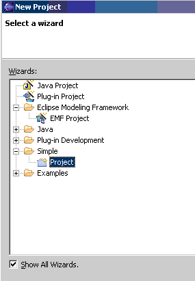
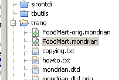
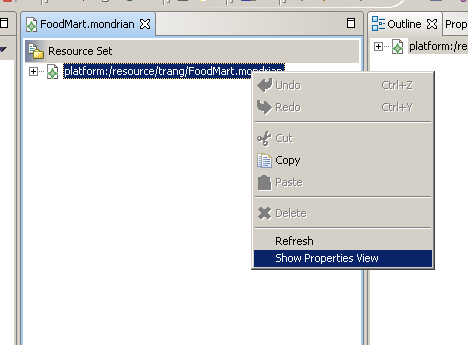
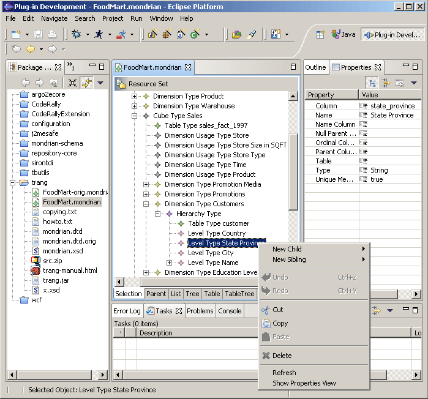

This Eclipse Plug-in allows to edit Mondrian OLAP-Schema XML files.
Download and install Eclipse version 3.x (3.0RC1 is current) and the EMF&SDO version 2.x (required). Unzip the mondrian-schema.zip into the eclipse installation directory - this will install the plugin. Start up eclipse and in the menu click on Help -> About Eclipse Plattform -> Plug-in Details. Mondrian Schema Editor Plugin must appear in the list of installed plugins.
The plugin is registered with the ".mondrian" file extension, this means you will have to rename FoodMart.xml into FoodMart.mondrian so Eclipse can associate the file with the plugin.
The current Foodmart.xml example does not completely comply to the schema definition, unfortunately the editor plugin silently stops processing when it encounters an invalid element/attribute and does not issue an error message. To make FoodMart.xml editable you will have to change (aside from renaming it to FoodMart.mondrian) it with a text editor before:
<Param .../> elementstable attributes from <Property .../> elementsTo use the editor create a new project of type "Simple"

Choose a project directory that contains Foodmart.mondrian. In the Package Explorer select Foodmart.mondrian and open it (double click).

Right click on the root node to open the Properties view (once, Eclipse will remember this):

Now the Eclipse workbench should look similar to the following screenshot and you should be able to edit the Mondrian Schema.
